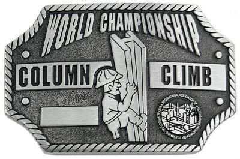
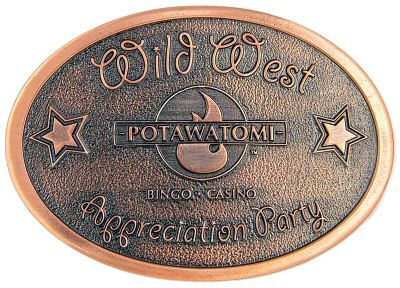

Which Metal to Choose? Pewter or Zinc?
- Everything we make is custom - made from molten metal
- We can manufacture your projects using either Pewter or Zinc - both have benefits, depending on your design.
- For many people, the issue comes down to the type of finish they want, and sometimes price becomes a factor
- Here is a quick overview of both metals:
Benefits of Pewter:
- Higher perceived value - long history as semi-precious metal
- Improved ability to reproduce intricate detail over Zinc
- Greater sculpturing can be performed for 3-Dimensional designs
- Good strength and durability - adaptable to slightly curved surfaces
- Natural silver like finish is the most common choice
- Quickest deliveries in natural finish
- Bright surface luster can be achieved when polished
- Can be finished in antique plating (but not usually done with this fine metal)
- Can have color added - white luster of surface is perfect back drop
- Only Fine Pewter is used for the production of our products
- Safe & environmentally friendly - 'lead' content far below all current and projected government regulations
Sample Pewter Buckle - Natural Finish
Benefits of Zinc:
- Lower cost than Pewter alternative
- Improved strength and durability versus Pewter
- Can be made very thin and still maintain strength & durability
- Most commonly plated / finished in:
- Antique Gold
- Antique Silver
- Antique Copper
- Bright Gold
- Bright Silver
- Bright Copper
- Can have color added
- Only Special High Grade Zinc is used for the production of our products
- Safe & environmentally friendly - 'lead' content far below all current and projected government regulations
Sample Zinc Buckle - Antique Copper Finish
Pewter - A Brief History and Background
Pewter is a metal alloy, traditionally between 85 and 99 percent tin, with the remainder consisting of 1-4 percent copper, acting as a hardener. Traditionally, there were three grades of pewter: fine, for eatingware, with 96-99 percent tin, and 1-4 percent copper; trifle, also for eating and drinking utensils but duller in appearance, with 92 percent tin, 1-6 percent copper, and up to 4 percent lead; and lay or ley metal, not for eating or drinking utensils, which could contain up to 15 percent lead.
Modern pewter mixes the tin with copper, antimony, and/or bismuth as opposed to lead.
Physically, pewter is a bright, shiny metal that is very similar in appearance to silver. Like silver, pewter will also oxidize to a dull gray over time if left untreated. Pewter is a very malleable alloy, being soft enough to carve with hand tools, or to be spin cast using centrifugal force into fine jewelry and recognition pieces. Pewter can be polished to a characteristic luster, further increasing it's perceived value and visual appeal.
Today's fine Pewter, with little or no lead is of finer quality, and alloys that include antimony and bismuth are more durable and shinier. Modern pewter is about 91% tin, 7.5% antimony, and 1.5% copper; the absence of lead makes it safe to use for foods and beverages. The finest of Pewters, used today for manufacture of jewelry and lead-free product lines, is about 97% Tin, to guarantee only the cleanest and environmentally friendly product lines. The surface of modern pewter is bluish white with either a bright finish or a soft, satin sheen. It resists tarnish, retaining its color and finish indefinitely.
Pewter is shaped by casting, hammering, or spinning on a mold and is usually simply ornamented with rims, moldings, or engraving, although some Continental display ware, especially of the Renaissance period in France and Germany, shows intricate ornamentation. Pewter was early used in East Asia, and Roman pieces still exist today. England was a pewter center from the Middle Ages; pewter was the chief tableware until it was superseded by china. America imported much English pewter in colonial times and from c.1700 made large quantities. The craft had virtually disappeared by 1850 but was revived in the 20th century.
'Early pewter', with high lead content, darkened with age. With less than 35% lead, pewter was used for decanters, mugs, tankards, bowls, dishes, candlesticks, and canisters. The lead remained in solid solution with the tin so that the alloy was resistant to the weak acids in foods. Tin-based alloy was used to make domestic utensils. Pewter dates back at least 2,000 years, to Roman times. Ancient pewter contained about 70% tin and 30% lead.
Such pewter, also called black metal, darkened greatly with age, and the lead readily leached out in contact with acidic foods.
Today's fine 'lead free' Pewter offers, to a talented craftsman, a potential brilliance almost equal to sterling silver in appearance. Add to this it's soft and pliable nature, and you have a product that is well suited to any project requiring a high perceived value, curved design, and the least amount of weight. It also is the metal of choice for those involved in the creation of 3D sculptured designs - as it's a pleasure to work with such a refined alloy
Any reputable manufacturer today should be using only the highest quality of Pewter available, totally 'Lead-Free'. Though harder to come by, and somewhat more expensive, lead free Pewter is the material of choice for those wise companies truly wanting to supply the finest, and safest, products to the eventual consumer. It would be wise to ensure that your supplier meets these standards!